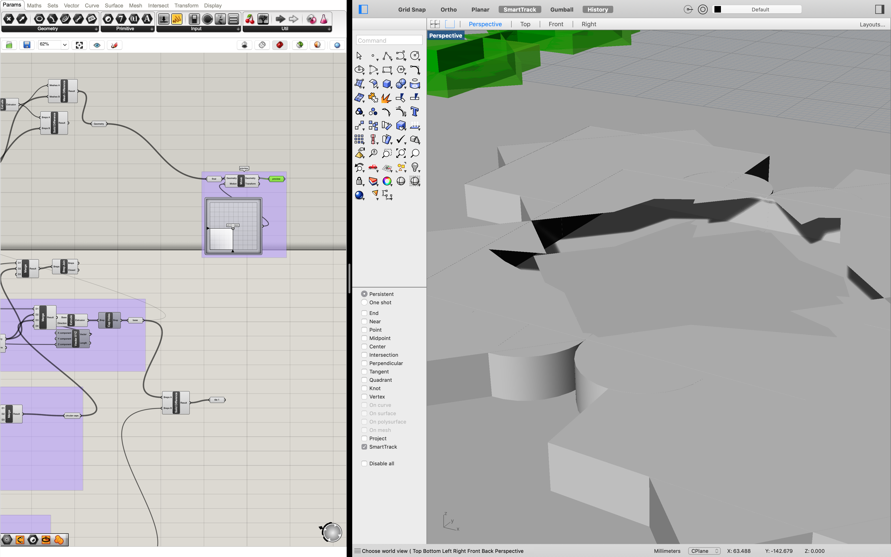

Assignment 6: Molding and Casting

The final plaster-cast tiles.
Overview
This week's assignment was a multi-step process. First, we needed to design a hard mold for our silicone mold, which would be either 3D printed or CNC milled. Then, using our new silicone mold, we would then cast plaster pieces.
Ideation
As always, I started by thinking about what form my project would take. Technically, we didn't need to design anything for this assignment, but I've been drawn to grasshopper designs lately and wanted to get a bit more practice.
I decided I wanted to do some sort of tile shape, inspired by tilework I've seen in Egypt and the UAE. I knew nothing about the history of these tiles, but I knew they were normally symmetric and ornately detailed. A bit of digging taught me that one implementation is called the "zellige." These tiles are generally abstract and show some form of tessellation to avoid the depiction of living things.
Sketches of the shapes of various tiles.


Ideas for details to add onto the tile. I had originally intended to add some planetary/space-y motifs onto my tile, including a "planet" with some surface texture that would show up like a topological map. Spoiler alert: I never got that far, but a girl can dream...
From a practical standpoint, I also wanted to stick with something simple since I was unfamiliar with molding and casting with plaster. An interesting but simple tile shape would allow me to experience the process without too much pain, and I could add as much or as little detail as I needed to.
Process

Original game plan (lol).
3x3 inch block is too large
3x3 inch block is too large
Don't try this. :(

It doesn't take much to make something cool with Grasshopper/Rhino when you're trying to make a pattern!

Someday I will figure out how to understand Grasshopper errors...

Gee thanks.

Finally realized that you can hover over the input parameter.

???
It's tiling!

It's tiling! pt 2!

What is happening
Starting to build the base.

Starting to build the base.

Empty toolpath error.
Flattening data did something good for me... though I still don't fully understand what it does.

Weird glitching with my boolean set up.

Weird glitching with my boolean set up.

Weird glitching with my boolean set up.
Finally got a mold modeled out with grasshopper! (Before grasshopper somehow reverted itself to a version from 12 hours ago...)

Tiles!!
Tiles!

Generating more tiles.

Baking as a group is helpful!

Grasshopper bug
Needed to manually get the radius of the circle when designing in Rhino
A baby banana/moon.
Double checking units in rhino.
Creating the curve in my design.

#iseefaces

Curve? Idk.
Adding details to the base.

Adding details to the base.

Modeled piece to cast.

Project curve onto sphere (which I did not use).

Project curve onto sphere (which I did not use).
Project curve onto sphere (which I did not use).
Project curve onto sphere (which I did not use).

Project curve onto sphere (which I did not use).

Figuring out the order of operations needed with booleans in Rhino.

Using the grashopper preview to ensure everything fits.
Top view of the mesh
Mesh of the mold
Mesh of the mold
Ensuring that my units are in millimeters!
Where is the setup menu and why doesn't the search work.

Srsly where is the setup menu.

Fusion 360 scaling issues.

Importing into Fusion 360.

Error creating a toolpath because the model wasn't selected.
Toolpath created and ready to post process!

Toolpath created and ready to post process!
Fusion 360 scaling issues.
Manually scaled, and now the units look correct.

Running through the workflow with the test file provided in class.
Generating the toolpath with Fusion 360.

Generating the test toolpath with Fusion 360.

Somehow, the toolpath got placed way outside of the box.

Moved the toolpath to the correct location and things are looking reasonable.
A reasonable looking toolpath!

Setting up the fluke wax in the Bantam!
Ready to cut!!!!

Just kidding.

An unsuccessful attempt to sand down the block of wax to fit in the Bantam...

Seattle Chocolates is the real MVP.

The first design for a 3D printed mold.
A partial print to test if the filament layers are sticking together properly.

Scaled down 3D print.
Flakey 3D print.
Flakey 3D print.
A successful oomoo mold.

Leftover oomoo.
The sky!!
Casting with the mold.

Casting with the mold.
Plaster texture (note: don't do this).
A couple of tile casts!
Results
The final cast pieces along with the mold and 3d printed piece.
My cat trying to knock over the final pieces.

A close-up of one of the better tiles.
A close-up of one of the better tiles.